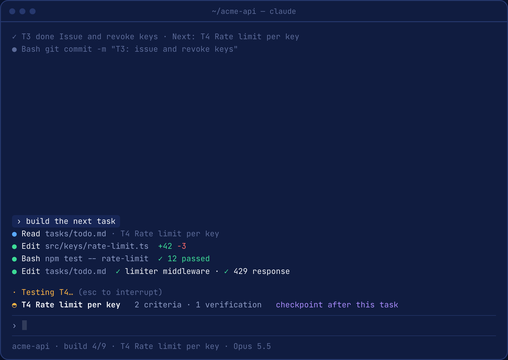
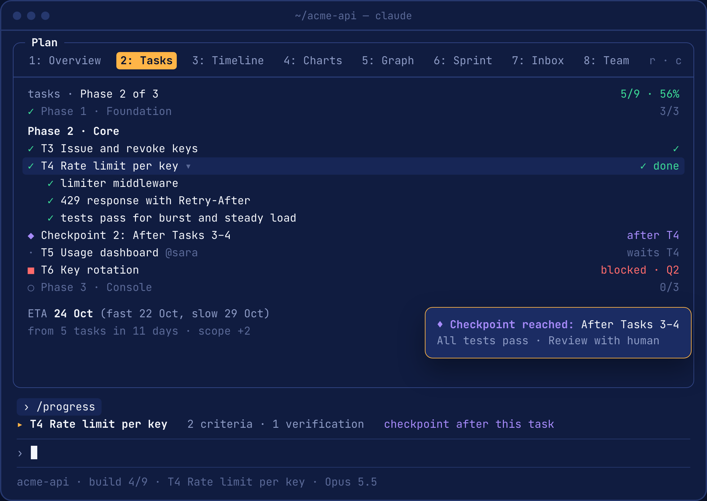
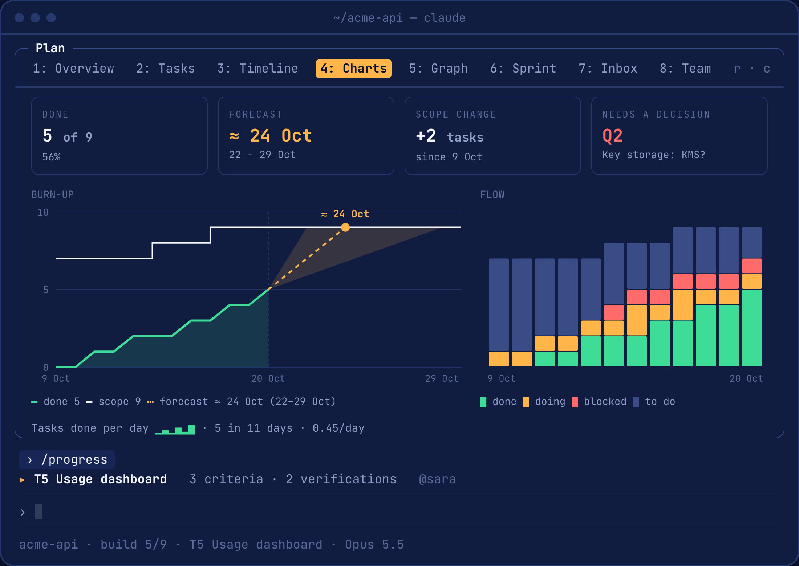
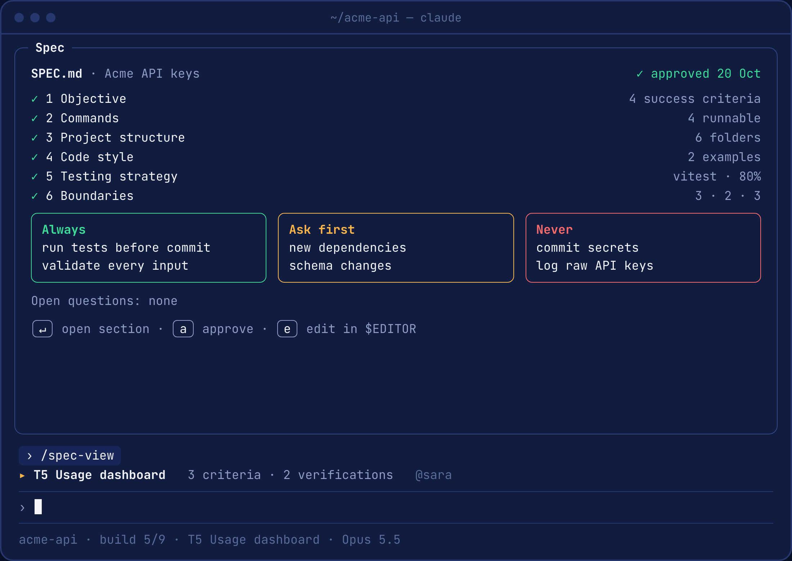
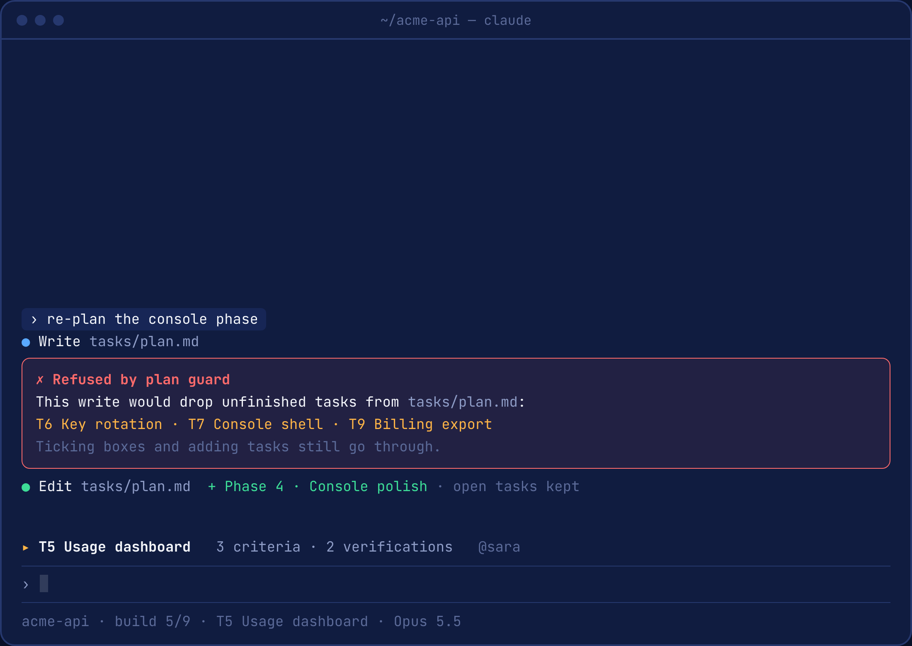
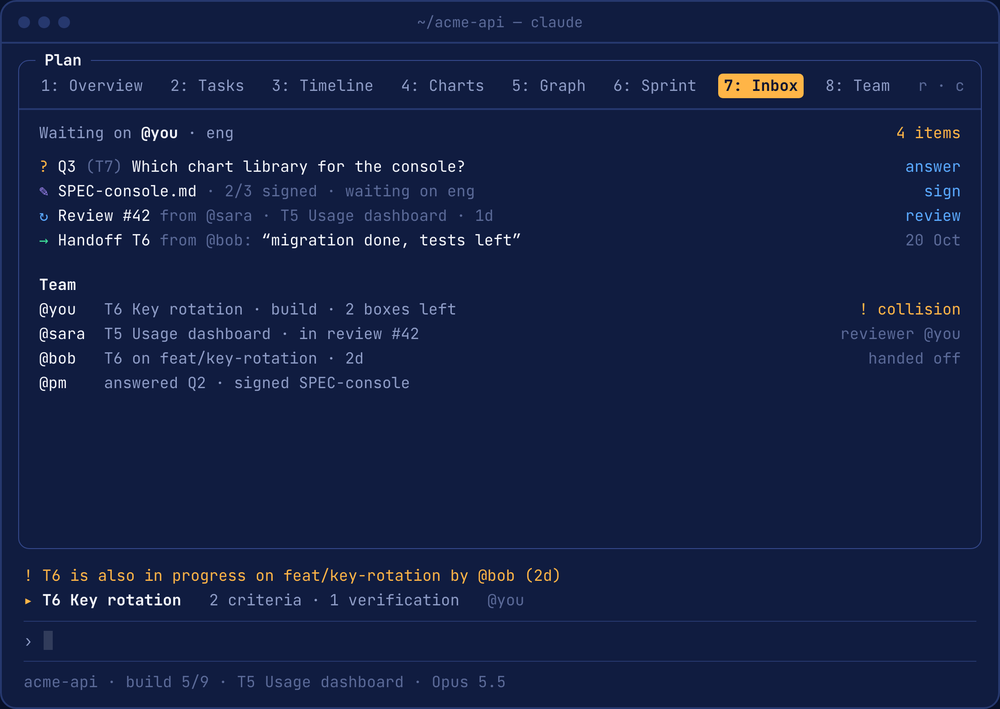
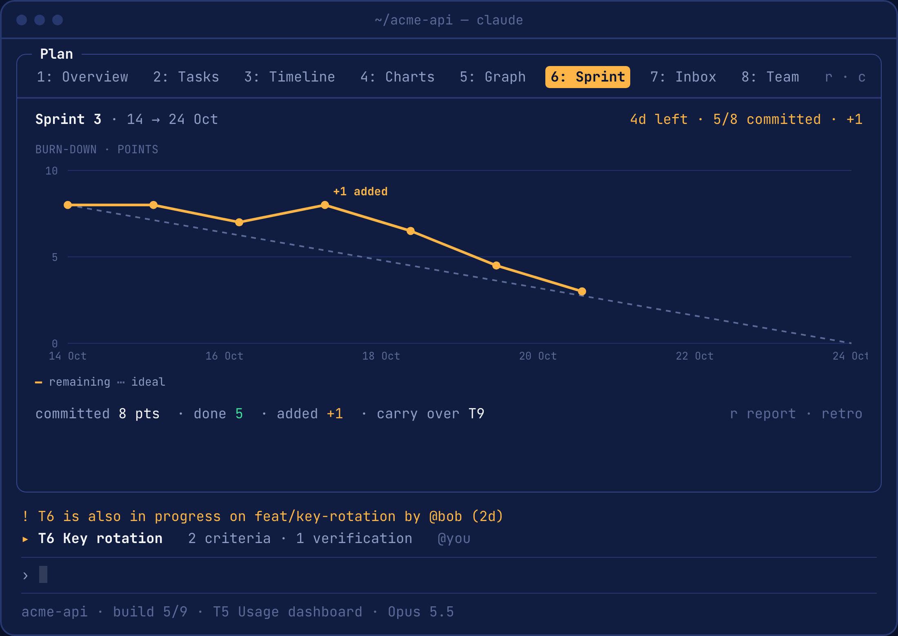
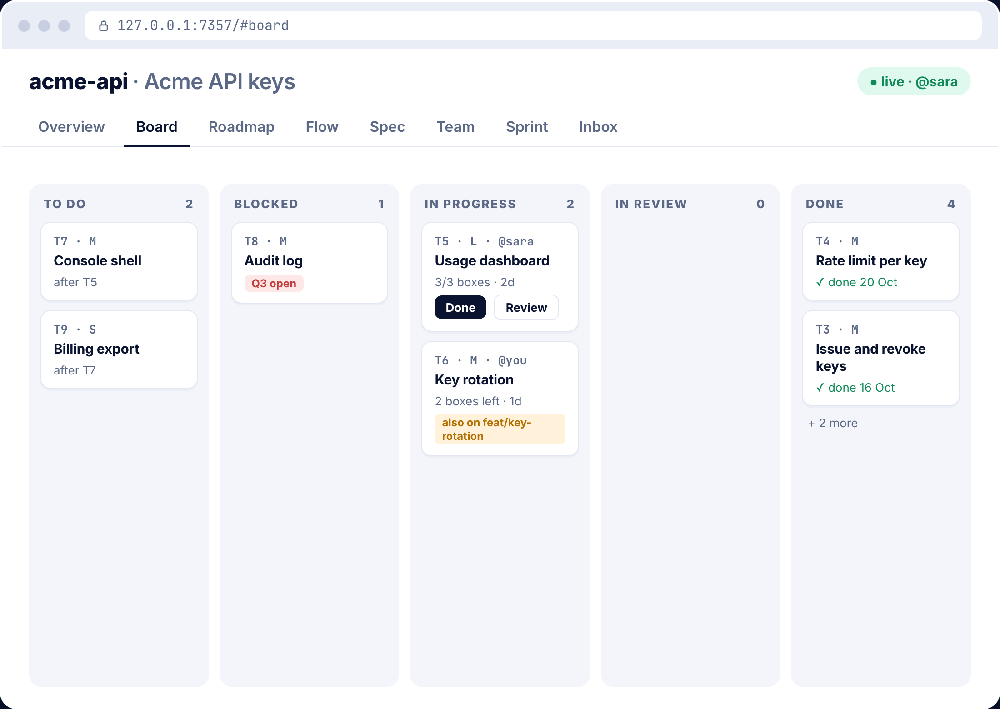

Your AI agent’s plan, as a live board.
agent-skills-mods reads the SPEC.md, plan and task list your agents already write, and shows where the project stands, what’s next and when it’ll be done. Right in Claude Code.
/plugin marketplace add lucksy/agent-skills-mods/plugin install agent-skills-mods@agent-skills-modsWorks on top of agent-skills. Don’t have it yet? The plugin tells you, and the steps are below.
60 seconds, with sound. The full walkthrough runs 2½ minutes.
agent-skills keeps agents on track. On big projects, people lose track.
I use agent-skills on client projects and my own. Everything lives in markdown files, and on large projects the same problems kept coming back.
Where does the project actually stand?
The task list runs to hundreds of lines of checkboxes.
When will it really be done?
Clients ask. Without a forecast, you guess.
An agent overwrote an unfinished plan.
A re-plan quietly dropped tasks that weren’t finished.
PMs and designers don’t use a terminal.
To them, the project’s state was invisible.
Two people picked up the same task.
On different branches, found out at merge time.
See where your project stands without leaving Claude Code.
The task under way, always in view
A band above the prompt shows the current task, what’s left on it and the next checkpoint.
- Open criteria and verifications counted apart
- Alerts when a task runs long or scope grows

Your plan as a live board
/progress opens a pane with eight tabs: Overview, Tasks, Timeline, Charts, Graph, Sprint, Inbox and Team.
- Click a task to open it, click a box to tick it in
tasks/todo.md - Toasts when a task is done or a checkpoint is reached

An ETA you can trust
A forecast from your real pace, shown as a range: fast, likely and slow. Burn-up and flow charts fit the pane, and on kitty or Ghostty they’re real pictures.
- History rebuilt from git, so it works on day one
- The run timeline and the critical path

Specs you approve with one key
/spec-view checks the six core areas of SPEC.md and frames its boundaries. Press a to approve; the date is written into front matter.
- Approvals by role for teams: product, design, eng
- An approved spec that changes goes back to draft

Plan guard
A write to the plan that would drop or rename an unfinished task is refused. Ticking boxes, adding tasks and rewording still go through.
- Optional gates warn when code changes before a spec is approved or a checkpoint is reviewed

Made for teams
Owners, reviews and handoffs, an inbox of what waits on you, and “since you last looked” at the start of each session.
- Warns when a task is in progress on two branches
- A team standup, one line per person

Sprints, when you want them
Optional. Plan what fits the next working days at your real pace, then follow a burn-down in points. The review and retro come from git history.
- Sizes S, M and L, a backlog with pull and defer
- Without a sprint, the plan runs as Kanban

A live dashboard for everyone else
/progress dashboard live serves the project on 127.0.0.1. PMs and designers sign specs, answer questions and move tasks. Every button writes the same markdown.
- Overview, Board, Roadmap, Flow, Spec, Team, Sprint and Inbox
- Or a single offline HTML file to send to anyone

Guided setup
/progress setup checks agent-skills, your spec, plan and task list, and says what to do next.
Dependency graph
The tasks as a tree, loops listed, and the longest chain of unfinished work.
Digest & report
Four lines for Slack, or a one-page HTML report with no scripts.
Across branches
Each task’s furthest state on any local branch, without fetching or checking out.
Task-aware merges
An opt-in git merge driver that merges the task list task by task.
Answers from the files
Ask “why is T3 blocked?” and Claude answers from the plan, citing task IDs.
Other agents too
A dependency-free CLI gives Cursor, Codex or CI the same summary, with --json.
Install in under a minute.
At a Claude Code prompt. agent-skills first, then this plugin.
Install agent-skills
This plugin reads what its skills write. Skip this if you have it.
/plugin marketplace add addyosmani/agent-skills/plugin install agent-skills@addy-agent-skillsInstall this plugin
Brings in /progress, /spec-view and the band.
/plugin marketplace add lucksy/agent-skills-mods/plugin install agent-skills-mods@agent-skills-mods/reload-pluginsCheck and set up
/progress setup checks agent-skills and your files, and names the next step.
/progress setup/progress formatIf agent-skills is missing or turned off, the band above the prompt says so at the start of a session, with Install, Not now and Don’t show again.
Needs Claude Code with mods (v2.1.287 or later). The live dashboard needs Node 22.6 or newer. Or from a shell: claude plugin marketplace add lucksy/agent-skills-mods && claude plugin install agent-skills-mods@agent-skills-mods
Everything is one slash away.
Every command reads or writes the same markdown files. Nothing is stored anywhere else.
No command matches that.
Read from your markdown and git. Nothing leaves your machine.
No network requestsThe plugin sends nothing anywhere.
127.0.0.1 onlyThe live dashboard listens locally, with a fresh token each run.
Git, read-onlyIt never fetches, commits, pushes or checks out.
Plain markdownRemove the plugin and your files are exactly what agent-skills reads.